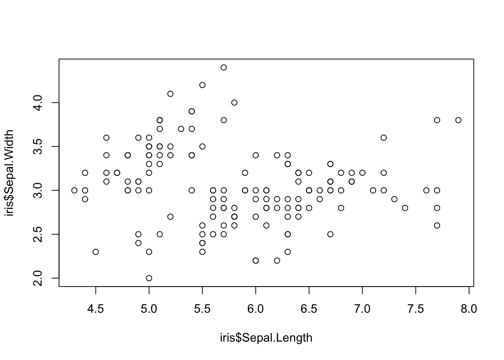
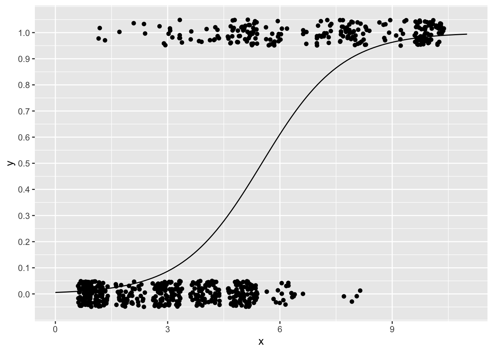
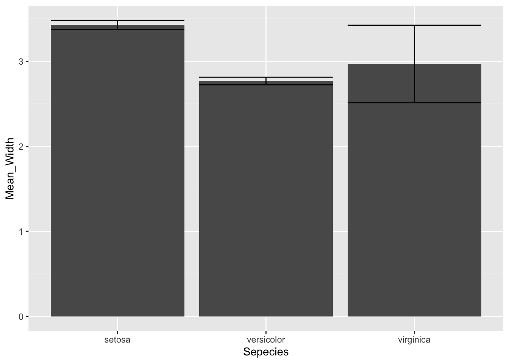
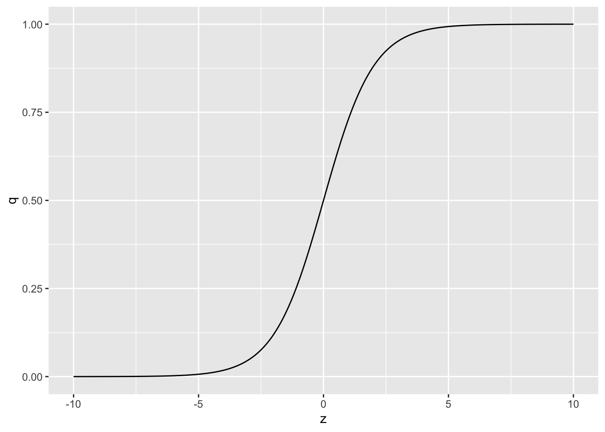
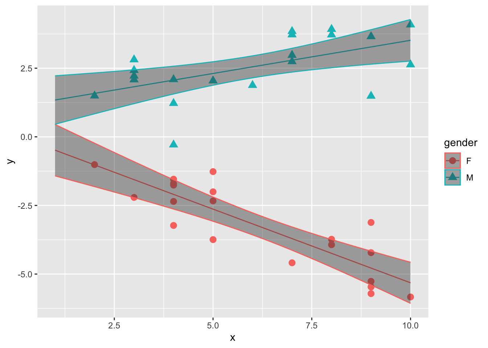
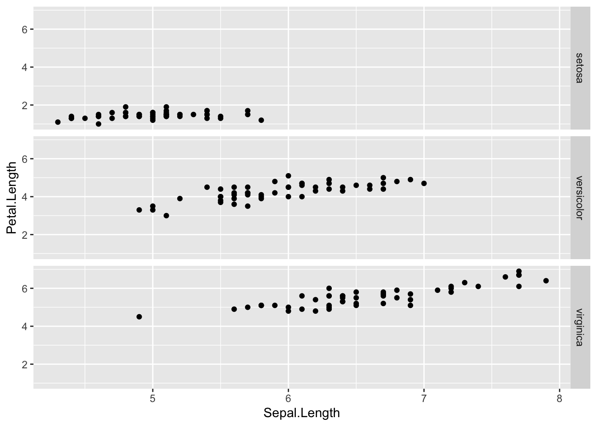
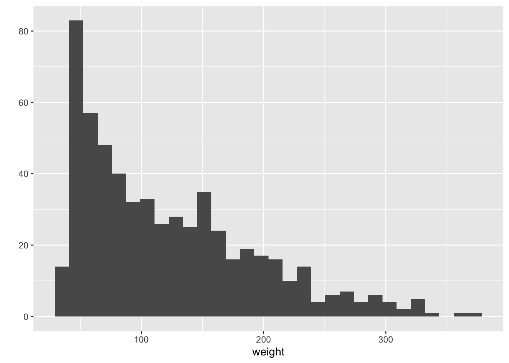
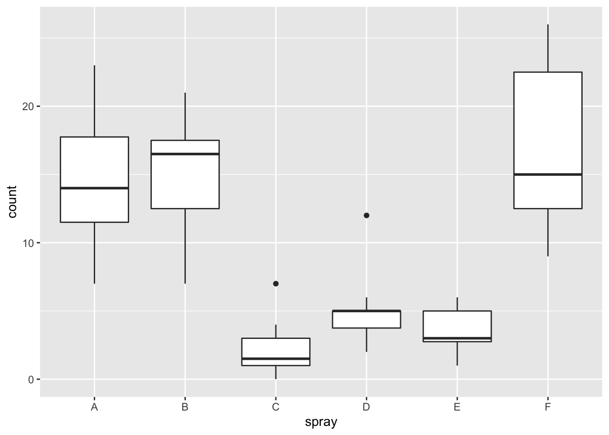
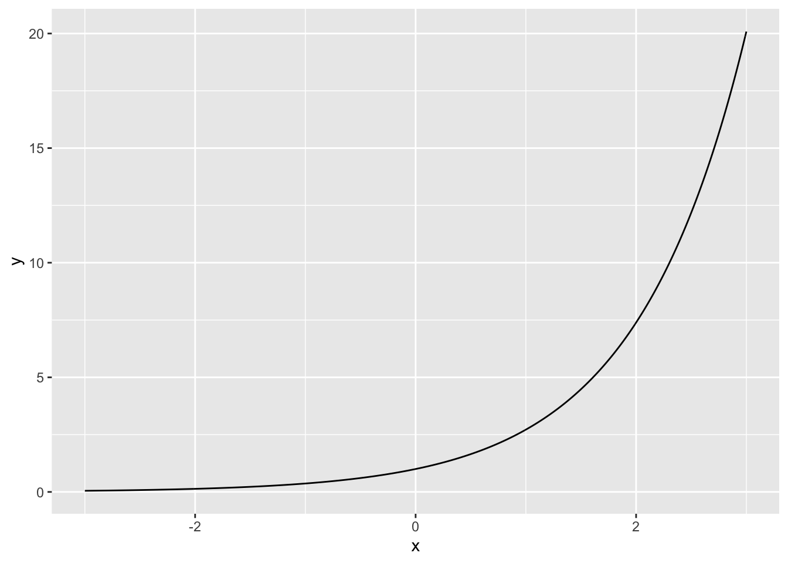

A tidyverseとは？
tidyverseは様々なパッケージを含んだ，パッケージのセットである。Rを使いやすくするための便利なパッケージがまとめて入っている。
データ分析の前に，予めtidyverseをロードしておけば，データの扱いで困ることがない。
ここでは，tidyverseの中に含まれるパッケージについて，よく使うものについて解説をする。
※この章の内容をすべて教えると授業時間が足りない。tidyverseに収録されているパッケージを学ぶには1 semesterは必要（ここで紹介しているのもほんの一部である！）。ここでは，この先の授業で使うであろうものに絞って紹介する。最後に練習問題ももうけている。
A.1 tidyverseパッケージのインストールとロード
- 以降のプログラムで関数は「XXXX::YYYY」と表現されているが，「XXXXパッケージに入っているYYYYという関数を使う」という意味である。XXXX::の部分は，基本的に省略しても問題ない。
- tidyverse以外のパッケージも読み込んでいる場合，同じ名前の関数を含むパッケージがあるとエラーが生じてしまう。仮にエラーが生じたときは，XXXX::を付けてどのパッケージの関数を使いたいのかを指定しよう。
A.2 tibble
tibbleとは，データフレームに代わるものとして開発された，Rの新たなデータ形式である。
これまでRで分析をする際には，データをデータフレーム（data.frame）という形式が使われてきた。
## x y
## 1 1 4
## 2 2 5
## 3 3 6as_tibble()でデータをtibble形式にできる。
## # A tibble: 3 x 2
## x y
## <dbl> <dbl>
## 1 1 4
## 2 2 5
## 3 3 6## # A tibble: 150 x 5
## Sepal.Length Sepal.Width Petal.Length Petal.Width Species
## <dbl> <dbl> <dbl> <dbl> <fct>
## 1 5.1 3.5 1.4 0.2 setosa
## 2 4.9 3 1.4 0.2 setosa
## 3 4.7 3.2 1.3 0.2 setosa
## 4 4.6 3.1 1.5 0.2 setosa
## 5 5 3.6 1.4 0.2 setosa
## 6 5.4 3.9 1.7 0.4 setosa
## 7 4.6 3.4 1.4 0.3 setosa
## 8 5 3.4 1.5 0.2 setosa
## 9 4.4 2.9 1.4 0.2 setosa
## 10 4.9 3.1 1.5 0.1 setosa
## # … with 140 more rowstibbleは，data.frameよりも可読性を向上させているのが特徴である。コンソールにはデータ全てではなく，最初の10行程度のみ，列も画面に入る範囲のみが表示される。
データをすべてを閲覧したいときは，View()を使おう。
自分でtibble型のデータを作ることも可能。
## # A tibble: 3 x 2
## x `c(4, 5, 6)`
## <dbl> <dbl>
## 1 1 4
## 2 2 5
## 3 3 6次に紹介するreadrパッケージのread_csv関数などでは，読み込んだファイルをデフォルトでtibble型にしてくれる。
A.3 readr
様々な形式のファイルを高速で読み書きことを目標としたパッケージ。
## Parsed with column specification:
## cols(
## X = col_double(),
## Y = col_double(),
## Gender = col_character()
## )## # A tibble: 5 x 3
## X Y Gender
## <dbl> <dbl> <chr>
## 1 4 6 M
## 2 7 3 F
## 3 7 6 M
## 4 3 3 M
## 5 4 4 Fread_csv()ならば，csvのファイルをtibble形式で読み込んでくれる。
* read.csv()ではなく，read_csv()なので注意（ドットではなく，アンダースコア）。
ファイルを書き出すための関数も用意されている。
* ここでは，write_excel_csv() を使っている。単にwrite_csv()でも可。
A.4 readxl
エクセル形式（xlsx）のファイルを読み込むことができる。
※ただし，データはできるだけxlsxよりもcsvで保存しておくことを推奨する。
A.5 dplyr
データを操作するのに特化した関数が用意されている。
* mutate(): 変数の追加
* filter(): 行の抽出
* select(): 変数の抽出
* summarise(): 複数の変数を1つにまとめる
* arrange(): データを並べ替える
* group_by(): グループにまとめる
## # A tibble: 150 x 5
## Sepal.Length Sepal.Width Petal.Length Petal.Width Species
## <dbl> <dbl> <dbl> <dbl> <fct>
## 1 5.1 3.5 1.4 0.2 setosa
## 2 4.9 3 1.4 0.2 setosa
## 3 4.7 3.2 1.3 0.2 setosa
## 4 4.6 3.1 1.5 0.2 setosa
## 5 5 3.6 1.4 0.2 setosa
## 6 5.4 3.9 1.7 0.4 setosa
## 7 4.6 3.4 1.4 0.3 setosa
## 8 5 3.4 1.5 0.2 setosa
## 9 4.4 2.9 1.4 0.2 setosa
## 10 4.9 3.1 1.5 0.1 setosa
## # … with 140 more rows## # A tibble: 150 x 6
## Sepal.Length Sepal.Width Petal.Length Petal.Width Species z
## <dbl> <dbl> <dbl> <dbl> <fct> <dbl>
## 1 5.1 3.5 1.4 0.2 setosa 10.2
## 2 4.9 3 1.4 0.2 setosa 9.8
## 3 4.7 3.2 1.3 0.2 setosa 9.4
## 4 4.6 3.1 1.5 0.2 setosa 9.2
## 5 5 3.6 1.4 0.2 setosa 10
## 6 5.4 3.9 1.7 0.4 setosa 10.8
## 7 4.6 3.4 1.4 0.3 setosa 9.2
## 8 5 3.4 1.5 0.2 setosa 10
## 9 4.4 2.9 1.4 0.2 setosa 8.8
## 10 4.9 3.1 1.5 0.1 setosa 9.8
## # … with 140 more rowsdat2 = dplyr::filter(dat, Species == "versicolor") #Speciesのうち，versicolorのみを取り出す。「イコール」は=ではなく，==にするのに注意（計算式と条件式ではイコールの表現が異なる）。
dat2## # A tibble: 50 x 5
## Sepal.Length Sepal.Width Petal.Length Petal.Width Species
## <dbl> <dbl> <dbl> <dbl> <fct>
## 1 7 3.2 4.7 1.4 versicolor
## 2 6.4 3.2 4.5 1.5 versicolor
## 3 6.9 3.1 4.9 1.5 versicolor
## 4 5.5 2.3 4 1.3 versicolor
## 5 6.5 2.8 4.6 1.5 versicolor
## 6 5.7 2.8 4.5 1.3 versicolor
## 7 6.3 3.3 4.7 1.6 versicolor
## 8 4.9 2.4 3.3 1 versicolor
## 9 6.6 2.9 4.6 1.3 versicolor
## 10 5.2 2.7 3.9 1.4 versicolor
## # … with 40 more rows## # A tibble: 150 x 2
## Sepal.Length Petal.Length
## <dbl> <dbl>
## 1 5.1 1.4
## 2 4.9 1.4
## 3 4.7 1.3
## 4 4.6 1.5
## 5 5 1.4
## 6 5.4 1.7
## 7 4.6 1.4
## 8 5 1.5
## 9 4.4 1.4
## 10 4.9 1.5
## # … with 140 more rowsdat2 = dplyr::summarise(dat, M = mean(Sepal.Length), SD = sd(Sepal.Length)) #Sepal.Lengthの平均を求め，Mという変数で保存する。同じく，SDという変数を新たに作る。
dat2## # A tibble: 1 x 2
## M SD
## <dbl> <dbl>
## 1 5.84 0.828## # A tibble: 150 x 5
## Sepal.Length Sepal.Width Petal.Length Petal.Width Species
## <dbl> <dbl> <dbl> <dbl> <fct>
## 1 4.3 3 1.1 0.1 setosa
## 2 4.4 2.9 1.4 0.2 setosa
## 3 4.4 3 1.3 0.2 setosa
## 4 4.4 3.2 1.3 0.2 setosa
## 5 4.5 2.3 1.3 0.3 setosa
## 6 4.6 3.1 1.5 0.2 setosa
## 7 4.6 3.4 1.4 0.3 setosa
## 8 4.6 3.6 1 0.2 setosa
## 9 4.6 3.2 1.4 0.2 setosa
## 10 4.7 3.2 1.3 0.2 setosa
## # … with 140 more rows## # A tibble: 150 x 5
## # Groups: Species [3]
## Sepal.Length Sepal.Width Petal.Length Petal.Width Species
## <dbl> <dbl> <dbl> <dbl> <fct>
## 1 5.1 3.5 1.4 0.2 setosa
## 2 4.9 3 1.4 0.2 setosa
## 3 4.7 3.2 1.3 0.2 setosa
## 4 4.6 3.1 1.5 0.2 setosa
## 5 5 3.6 1.4 0.2 setosa
## 6 5.4 3.9 1.7 0.4 setosa
## 7 4.6 3.4 1.4 0.3 setosa
## 8 5 3.4 1.5 0.2 setosa
## 9 4.4 2.9 1.4 0.2 setosa
## 10 4.9 3.1 1.5 0.1 setosa
## # … with 140 more rowsA.6 purrr
パイプ処理が使える。パイプ（%>%）で関数をつなげることで，1行のプログラムで複数の処理をすることができる。
※これはとても便利なので覚えよう。例えば，練習問題に載せている「グループ別に平均などを算出する」などをするには，パイプ処理を知らないと難しい。
## # A tibble: 150 x 5
## Sepal.Length Sepal.Width Petal.Length Petal.Width Species
## <dbl> <dbl> <dbl> <dbl> <fct>
## 1 5.1 3.5 1.4 0.2 setosa
## 2 4.9 3 1.4 0.2 setosa
## 3 4.7 3.2 1.3 0.2 setosa
## 4 4.6 3.1 1.5 0.2 setosa
## 5 5 3.6 1.4 0.2 setosa
## 6 5.4 3.9 1.7 0.4 setosa
## 7 4.6 3.4 1.4 0.3 setosa
## 8 5 3.4 1.5 0.2 setosa
## 9 4.4 2.9 1.4 0.2 setosa
## 10 4.9 3.1 1.5 0.1 setosa
## # … with 140 more rowsdat2 = dat %>% dplyr::filter(Species == "setosa") %>% dplyr::select(Sepal.Width, Sepal.Length) %>% dplyr::arrange(Sepal.Width)
#Speciesがsetosaだけの行を抽出し，更にSepal.WidthとSepal.Lengthの列を取り出し，Sepal.Widthの小さい順に並び替える。これを1行で実行
dat2## # A tibble: 50 x 2
## Sepal.Width Sepal.Length
## <dbl> <dbl>
## 1 2.3 4.5
## 2 2.9 4.4
## 3 3 4.9
## 4 3 4.8
## 5 3 4.3
## 6 3 5
## 7 3 4.4
## 8 3 4.8
## 9 3.1 4.6
## 10 3.1 4.9
## # … with 40 more rowsdat2 = dat %>%
dplyr::group_by(Species) %>%
dplyr::summarise(M = mean(Sepal.Width), SD = sd(Sepal.Width), N = length(Sepal.Width))
#Speciesでグループにし，グループごとにSepal.Widthの平均，標準偏差，N数を出力する。
dat2## # A tibble: 3 x 4
## Species M SD N
## <fct> <dbl> <dbl> <int>
## 1 setosa 3.43 0.379 50
## 2 versicolor 2.77 0.314 50
## 3 virginica 2.97 0.322 50A.7 ggplot2
※ggplot2の使い方はかなり「玄人」向けである。一度で理解しきれなくても，普通である。Excelでグラフを作るよりもはるかに便利では有るので，今はすべて理解しきれなくても，卒論やゼミでグラフを作る必要に駆られたときにトライしてみてほしい。
グラフの作成に特化したパッケージである。Rにも標準でグラフィック関数が用意されているが，あまりきれいではないし，グラフの編集もやりにくい。

## NULLggplot2ならば，見やすいグラフを出力してくれる。また，軸の名前など，ユーザーが事由に図をカスタマイズできる。
p = ggplot2::ggplot()
p = p + geom_point(data=iris, aes(x=Sepal.Length, y=Petal.Length, shape = Species))
p = p + labs(x = "Length of Sepal", y = "Length of Petal")
p
A.7.1 ggplot2の使い方の基本
基本は，1) geom_xxxxで出力したいグラフの種類を指定し，2) データの名前を指定し，3) aes()にx軸とy軸に指定したい変数を入力する。
p = ggplot2::ggplot() #←まず，ggplot()関数を実行する
p = p + geom_point(data=iris, aes(x=Sepal.Length, y=Petal.Length, shape = Species)) #geom_xxxxで，グラフの種類を指定する。data=でデータの名前，aes()の中に，x軸の変数，y軸の変数を入力する。他にも，形(shape)，色（fill）などで区別したい変数があれば指定する。
p
A.7.1.1 グラフの種類
geom_xxxxでグラフの種類を指定することができる。以下に，作ることができるグラフを紹介する。
A.7.1.1.1 散布図
geom_pointで作成可能。

重なって見えにくい場合は，geom_jitterを使うとランダムのズレつくって表示してくれる。

A.7.1.1.2 棒グラフ
geom_barで作成可能。
なお，エラーバーを表示できるgeom_errorbarもある。
#サンプルデータをつくる: あやめの種ごとのがくの幅の平均
iris_mean = data.frame(
Sepecies = c("setosa", "versicolor", "virginica"),
Mean_Width = c(3.43, 2.77, 2.97),
SE_Width = c(0.0536, 0.0444, 0.456)
)
iris_mean## Sepecies Mean_Width SE_Width
## 1 setosa 3.43 0.0536
## 2 versicolor 2.77 0.0444
## 3 virginica 2.97 0.4560p = ggplot()
p = p + geom_bar(data = iris_mean, aes(x=Sepecies, y=Mean_Width), stat = "identity") #stat="identity"は，”データの集計などは必要なく数値どおりの値を出力してください”という命令
p = p + geom_errorbar(data = iris_mean, aes(x= Sepecies, ymax = Mean_Width + SE_Width, ymin = Mean_Width - SE_Width))
p
棒グラフはデータの範囲について，かなりの情報を削ぎ落としてしまう。なので，棒グラフではなく箱ひげ図を使うほうが良い。
A.7.1.1.3 ヒストグラム
geom_histogramで作成可能。x軸の変数のみを指定する。

A.7.1.1.4 箱ひげ図
geom_boxplotで作成可能。y軸に分布を示したい変数を入れる。x軸にグループを入れれば，グループごとに分布の違いを比較することができる。 最小値，第一分位点，中央値，第三分位点，最大値を示す（外れ値は点で示される）。

A.7.1.1.5 ヴァイオリンプロット
分布を示すグラフとして，ヴァイオリンプロットと呼ばれるグラフがある。 geom_violineで作成可能。
A.7.1.1.6 折れ線グラフ
geom_lineで作成可能。時系列などの変化を見るときには適切。
#サンプルデータをつくる: 10日間の気温の変化
temperature <- data.frame(
Days = 1:10,
Celsius = c(17.2, 17.5, 18.1, 18.8, 19.0, 19.2, 19.7, 20.2, 20.5, 20.1)
)
p = ggplot()
p = p + geom_line(data = temperature, aes(x=Days, y=Celsius))
p
A.7.1.2 オプション
A.7.1.2.1 ラベル
labs()で，グラフの軸のタイトルなどを変えることができる。
p = ggplot2::ggplot()
p = p + geom_point(data=iris, aes(x=Sepal.Length, y=Petal.Length, shape = Species))
p = p + labs(x = "title of x axis", y = "title of y axis", title = "title of the plot")
p
A.7.1.2.2 ファセット
facet_grid()で，グループごとにプロットを分けることができる。
p = ggplot2::ggplot()
p = p + geom_point(data=iris, aes(x=Sepal.Length, y=Petal.Length))
p = p + facet_grid(cols = vars(Species))
p
p = ggplot2::ggplot()
p = p + geom_point(data=iris, aes(x=Sepal.Length, y=Petal.Length))
p = p + facet_grid(rows = vars(Species))
p
A.7.1.2.3 テーマ
デフォルトのテーマはプロットの背景が灰色だが，テーマを変えることができる。theme_bw()がおすすめ。
p = ggplot2::ggplot()
p = p + geom_point(data=iris, aes(x=Sepal.Length, y=Petal.Length, shape = Species))
p
A.7.1.3 もっと簡単な方法
gglot2パッケージのqplot()でも手っ取り早くグラフを作成することが出来る（quick plotの略）。とりあえずデータの傾向を見たいだけなら，qplot()を使うのが良い。x軸もしくはy軸に指定したい変数を入れればできるので，これくらいは覚えておくと良い。
- x軸とy軸に表示する変数を2つ入れれば散布図，x軸の変数1つだけならヒストグラムがデフォルトで表示される。geomでグラフの種類を指定することも可能。



A.8 tidyr
tidyrパッケージに入っているgather()とspread()を使うと，データのレイアウトを変えることができる。
A.8.1 wide型とlong型の区別
まず，データのレイアウトには，wide型とlong型の二種類があることを理解しよう。
以下のデータを例として説明する。A, B, Cの3人の参加者が，X, Y, Z条件の３つの条件で実験課題を行ったとする。
それぞれの条件での課題の成績（数値），参加者の性別，年齢をデータとして入力する。
dat_wide = tibble(Subject = c("A","B","C"), X = c(6,2,7), Y = c(9,3,4), Z = c(7,5,7), Gender = c("M", "F", "F"), Age = c(18, 19, 20)) #サンプルデータを作る
dat_wide## # A tibble: 3 x 6
## Subject X Y Z Gender Age
## <chr> <dbl> <dbl> <dbl> <chr> <dbl>
## 1 A 6 9 7 M 18
## 2 B 2 3 5 F 19
## 3 C 7 4 7 F 20このように，１行につき１人の参加者の情報を入力するやり方が一つある（例えばExcelでデータを入力する際も，恐らくこのレイアウトの方が入力しやすいだろう）。このようなデータのレイアウトをwide型という。
同じデータでも，以下のようなレイアウトで表現する場合もある。
dat_long = tibble(Subject = sort(rep(c("A","B","C"), 3)), Condition = rep(c("X","Y","Z"), 3), Score = c(6,9,7,2,3,5,7,4,7), Gender = c("M", "M", "M", "F","F","F","F","F", "F"), Age = sort(rep(c(18,19,20), 3))) #サンプルデータを作る（ここでは手入力でlong型のデータに変換することの面倒さを知ってもらうために，あえて複雑なプログラムでサンプルデータを作っている。プログラムの意味を理解する必要はない。）
dat_long## # A tibble: 9 x 5
## Subject Condition Score Gender Age
## <chr> <chr> <dbl> <chr> <dbl>
## 1 A X 6 M 18
## 2 A Y 9 M 18
## 3 A Z 7 M 18
## 4 B X 2 F 19
## 5 B Y 3 F 19
## 6 B Z 5 F 19
## 7 C X 7 F 20
## 8 C Y 4 F 20
## 9 C Z 7 F 20実験成績ごとに１行ずつでデータが作られている。すなわち，同じ参加者１人につき３行のデータがある。このようなデータの方をlong型と呼ぶ。
A.8.2 どのデータ型にすべきか？
この講義で使う分析では，原則としてデータはlong型で入力されたものを使う。
Rで用いる関数の多くは，long型でデータが入っていることを想定としているためである。
A.8.3 データレイアウトの変換
※以下のプログラムを理解するのははじめのうちは難しい。必要になったときにヘルプなども参照し，試行錯誤をしながら適切なデータ変換を試みてほしい。
wide型をlong型に変換するには，tidyrパッケージのgather()を使う。
## # A tibble: 3 x 6
## Subject X Y Z Gender Age
## <chr> <dbl> <dbl> <dbl> <chr> <dbl>
## 1 A 6 9 7 M 18
## 2 B 2 3 5 F 19
## 3 C 7 4 7 F 20dat_long2 = dat_wide %>% tidyr::gather("X", "Y", "Z", key = Condition, value = Score) #並び替える変数を指定する。そして，key変数（ここでは条件），value変数（ここでは成績）の名前を指定する。
dat_long2## # A tibble: 9 x 5
## Subject Gender Age Condition Score
## <chr> <chr> <dbl> <chr> <dbl>
## 1 A M 18 X 6
## 2 B F 19 X 2
## 3 C F 20 X 7
## 4 A M 18 Y 9
## 5 B F 19 Y 3
## 6 C F 20 Y 4
## 7 A M 18 Z 7
## 8 B F 19 Z 5
## 9 C F 20 Z 7逆に，long型をwide型に変換するには，tidyrパッケージのspread()を使う。
## # A tibble: 9 x 5
## Subject Condition Score Gender Age
## <chr> <chr> <dbl> <chr> <dbl>
## 1 A X 6 M 18
## 2 A Y 9 M 18
## 3 A Z 7 M 18
## 4 B X 2 F 19
## 5 B Y 3 F 19
## 6 B Z 5 F 19
## 7 C X 7 F 20
## 8 C Y 4 F 20
## 9 C Z 7 F 20dat_wide2 = dat_long %>% tidyr::spread(key = Condition, value = Score) #key変数（ここでは条件），value変数（ここでは成績）とする変数を指定する。
dat_long2## # A tibble: 9 x 5
## Subject Gender Age Condition Score
## <chr> <chr> <dbl> <chr> <dbl>
## 1 A M 18 X 6
## 2 B F 19 X 2
## 3 C F 20 X 7
## 4 A M 18 Y 9
## 5 B F 19 Y 3
## 6 C F 20 Y 4
## 7 A M 18 Z 7
## 8 B F 19 Z 5
## 9 C F 20 Z 7B 使い方まとめ
「心理学データ解析法」で使う手順に沿って，よく使うものだけ確認しよう。
B.1 tidyverseパッケージのインストールとロード
帝京大学のコンピュータルームのマシンは電源をいれるたびに設定がリセットされてしまうので，毎回はじめにこれを行う。
B.2 データの読み込み
read_csv()でcsvファイルを読み込む。tibble形式でデータが表示される。
## # A tibble: 5 x 3
## X Y Gender
## <dbl> <dbl> <chr>
## 1 4 6 M
## 2 7 3 F
## 3 7 6 M
## 4 3 3 M
## 5 4 4 F今日の課題は以下だったとする。
- 性別（Gender）ごとに，変数X及びYの平均値と標準偏差を計算する。
- 変数XとYの散布図を出す。
- 新しい変数Z=2X+Yを作って，データに付け足す。
- 新しい変数を加えたデータを名前をつけて保存する。
B.3 結果の集計
- group_byでグループにごとに出したい変数（i.e., Gender）を指定し，
- summariseでまとめる。
パイプ(%>%)を使えば1つのプログラムで実行可能。
dat %>% group_by(Gender) %>%
summarise(Mean_X = mean(X), SD_X = sd(X), Mean_Y = mean(Y), SD_Y = sd(Y))## # A tibble: 2 x 5
## Gender Mean_X SD_X Mean_Y SD_Y
## <chr> <dbl> <dbl> <dbl> <dbl>
## 1 F 5.5 2.12 3.5 0.707
## 2 M 4.67 2.08 5 1.73
B.5 新しい変数を作る
mutate()を使う。
## # A tibble: 5 x 4
## X Y Gender Z
## <dbl> <dbl> <chr> <dbl>
## 1 4 6 M 16
## 2 7 3 F 13
## 3 7 6 M 19
## 4 3 3 M 9
## 5 4 4 F 12## # A tibble: 5 x 4
## X Y Gender Z
## <dbl> <dbl> <chr> <dbl>
## 1 4 6 M 16
## 2 7 3 F 13
## 3 7 6 M 19
## 4 3 3 M 9
## 5 4 4 F 12B.7 もっと知りたい人は
tidyverseの公式ページに，チートシートが公開されている。
C 第10章「一般化線形モデル」の付録
以下の説明は，高校数学の知識があればわかる内容となっている（はず）。この付録を読まなくても，ロジスティック回帰の理解に差し障りはない（はず）。
C.1 １．指数と対数
指数と対数は，以下の関係にある。
\[ y = e^x \\ \log_{e}y = x \\ \]
\(e\)とはネイピア数と呼ばれるもので（自然対数の底とも呼ばれる），\(e=\) 2.7182818の一定の値を取る（円周率\(\pi\)と同様に，数学において扱われる重要な定数である）。
一般的に，ネイピア数は指数関数の底（\(f(x)=a^x\)の\(a\)に当たる部分）の底としてよく用いられる。
なお，\(e^x\)は，\(\exp(x)\)とも表記する。以降の記述でも，\(\exp(x)\)の方を使う。
また，\(e\)を底とする対数（自然対数）は，\(\log_{e}y\)は単に\(\log y\)と底を省略して表記される。
すなわち，まとめるとネイピア数を底とする指数及び対数の関係は以下のようになる。
\[ y = \exp(x) \\ \log y = x \\ \]
Rでは\(\exp(x)\)の値を求める関数exp()が用意されている。また，\(\log x\)もlog()関数で求めることができる。
## [1] 2.718282## [1] 0.3678794## [1] 0対数と指数は逆関数の関係にある。
## [1] 100## [1] 100C.1.1 指数関数
以下が，\(y=e^x\)のグラフである。
x = seq(-3, 3, 0.01)
y = exp(x)
exp_graph = data.frame(y=y, x=x)
ggplot(data = exp_graph, aes(x=x, y=y)) + geom_line()
このように，指数関数は，xが負の値をとってもyは0に漸近するが0にはならないという性質がある。
C.1.2 対数関数
以下が，\(y=\log x\)のグラフである。
x = seq(0, 3, 0.01)
y = log(x)
log_graph = data.frame(y=y, x=x)
ggplot(data = log_graph, aes(x=x, y=y)) + geom_line()
C.2 ２．ロジスティック関数とロジット関数の関係
以下のロジスティック関数（式(3)）は，
\[ q_{i} = \frac{1}{1+\exp[-(\beta_{0} + \beta_{1}x_{i})]} \tag{3} \]
ロジット関数（式(4)）にも変形できる。
\[ \log\frac{q_{i}}{1-q_{i}} = \beta_{0} + \beta_{1} x_{i} \tag{4}\\ \]
なぜか。式(3)から式(4)へ整理してみる（\(y_{i} = \beta_{0} + \beta_{1} x_{i}\)とする）。
\[ q_{i} = \frac{1}{1+\exp(-y_{i})} \\ q_{i}(1+\exp(-y_{i})) =1 \\ q_{i} \biggl\{ 1+\frac{1}{\exp(y_{i})} \biggl\} = 1 \\ q_{i}+\frac{1}{\exp(y_{i})}q_{i} = 1 \\ q_{i}\exp(y_{i})+q_{i} = \exp(y_{i}) \\ q_{i} = \exp(y_{i}) - q_{i}\exp(y_{i}) \\ q_{i} = \exp(y_{i})(1 - q_{i}) \\ \frac{q_{i}}{1-q_{i}} = \exp(y_{i})\\ \log \frac{q_{i}}{1-q_{i}} = y_{i}\\ \]
このように，ロジット関数はロジスティック関数へ変形することが可能。逆に，ロジスティック関数からロジット関数へ変形することも可能。ロジット関数はロジスティック関数の逆関数であり，ロジスティック関数はロジット関数の逆関数である。
C.3 ３．ロジスティック回帰の係数の意味
ロジスティック回帰で推定した回帰式で求める予測値yそのものは，確率を意味しない。 例えば，本文の例題で求めた係数をもとに，独立変数V1=1を代入してみると，
## [1] -4.22471マイナスの値である。推定したいのは確率なのに，0から1の範囲に収まらない。
なぜならば，線形予測子から推定されるのは本文の式(4)で示したように，正確には\(\log q_{i}/(1-q_{i})\)だからである。
\[ \log\frac{q_{i}}{1-q_{i}} = \beta_{0} + \beta_{1} x_{i} \tag{4}\\ \]
\(q_{i}/(1-q_{i})\)はオッズ(odds)と呼ばれるもので，ある事象が生じる確率と生じない確率の比を意味する（\(q_{i} = 0.5\)ならばオッズは1，\(q_{i} = 0.9\)ならばオッズは9になる）。
線形予測子から推定されるのは，オッズの対数である（対数オッズ）。
また，式(4)は，以下の式(4’)に変形できる。
\[ \frac{q_{i}}{1-q_{i}} = \exp(\beta_{0} + \beta_{1} x_{i}) \tag{4'}\\ \] \[ \frac{q_{i}}{1-q_{i}} = \exp(\beta_{0}) \exp(\beta_{1} x_{i}) \\ \]
例題で推定された切片及び傾きのパラメータを入れると，
\[ \frac{q_{i}}{1-q_{i}} = \exp(-5.16) \exp(0.94 x_{i}) \\ \] 独立変数\(x_{i}\)が一単位増えた場合，
\[ \frac{q_{i}}{1-q_{i}} = \exp(-5.16) \exp(0.94 (x_{i}+1)) \\ \frac{q_{i}}{1-q_{i}} = \exp(-5.16) \exp(0.94x_{i})\exp(0.94) \\ \]
つまり，オッズ\(q_{i}/(1-q_{i})\)は，\(\exp(0.94)\)倍になる。\(\exp(0.94)\)は2.56であるので，2.56倍である。
## [1] 2.559981すなわち，ロジスティック回帰の係数（の指数）が意味することは，1単位増えたときにオッズが何倍になるかである（オッズ比という。「XXXをすると，病気のリスクがしないときよりもX倍になる」というイメージ）。
係数が正だとオッズ比は1を超える値を取り，負だと0以上1未満の値を取る。
## [1] 2.718282## [1] 0.3678794線形予測子から，確率\(q_{i}\)を直接求めるならば，式(3)を使えば良い。
## [1] 0.01441864C.4 ４．ポアソン回帰で対数をリンク関数とする理由
ポアソン分布を誤差分布とするとき，リンク関数は対数(log)を用いた。
\(\lambda\)はポアソン分布の平均値を意味する。
\[ \log\lambda = \beta_{0} + \beta_{1} x \\ \] これを変形すると，
\[ \exp(\log \lambda) = \exp(\beta_{0} + \beta_{1} x) \\ \lambda = \exp(\beta_{0} + \beta_{1} x) \\ \]
となる。
線形予測子が負の値であっても，exp(線形予測子)は正の値を取る（指数関数の式を参照）。ポアソン分布のパラメータ\(\lambda\)は\(\lambda>0\)でなければならないが，対数をリンク関数とすることでその前提が満たされる。